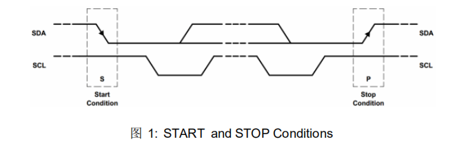

IIC协议双线需要满足的条件：
对于IIC协议：IIC的SCL和SDA都要求接上拉电阻，也即，只要主机和从机都还没开始干活，那么SCL和SDA就都是空闲的（默认高电平被称为“空闲”，也可以成为总线被“释放”），同理，SCL或SDA为low时，就称总线被占用或正忙。
IIC协议要求：SCL和SDA必须都是【开漏+上拉】！
简单些一下开漏和推挽的区别：参考 https://blog.csdn.net/qq_27016651/article/details/83096126
（1）推挽：写1时，GPIO被导通到VCC，写0时GPIO被导通到GND
（2）开漏：写1时，GPIO被导通到悬空的漏极，写0时GPIO被导通到GND。
也即IO开漏时，要想写1驱动LED，必须得接上拉电阻，要不然这个IO上写1时，是高阻态，虽然电压表测出了电压，但仍然无法驱动LED，就好像这个IO是悬空似的。
下面讲讲为什么IIC必须要接上拉？
换句话说，IIC的从器件（如24C04等），不具备拉高总线的能力，从机控制SDA上的电平，只能通过令SDA接地或不接地来实现输出0或1，而无法通过接地或接VCC来实现输出0或1。这就要求IIC总线上必须是默认上拉的，否则从机无法令SDA为高。
从另一方面讲：只有开漏上拉，才能满足“线与”逻辑，也即SDA线上多个从机中的任何一个拉低了SDA，就会导致SDA为0。
主机为什么使用开漏？试想，
主机如果使用了推挽，当主机释放SDA时（令SDA=1时），相当于SDA被接通到VCC，这时从机无法控制SDA为0；
主机如果使用了开漏，当主机释放SDA时（令SDA=1时），相当于SDA被悬空上拉到VCC，这时从机可以拉低SDA，使SDA=0，也可以释放SDA使SDA=1，这样从机才能发数据。
一般常用的SCL频率为100KHZ~400KHZ。
IIC协议时序：
不同于SPI和串口，IIC双线传输两线分别为SCL时钟线和SDA数据线,半双工通信，主从通信，同步通信。
先理解 IIC 协议：两条线可以挂多个设备。 IIC 设备（稍微有点智能的）里有个固化的地址，只有在两条线上传输的值等于我（ IIC 设备）的地址时，我才作出响应。

开始信号：处理器让时钟信号 SCL 保持高电平，然后让数据信号 SDA由高变低就表示一个开始信号。同时 IIC 总线上的设备检测到这个开始信号它就知道处理器要发送数据了。
停止信号：处理器让时钟信号 SCL 保持高电平，然后让数据信号 SDA由低变高就表示一个停止信号。同时 IIC 总线上的设备检测到这个停止信号它就知道处理器已经结束了数据传输，我们就可以各忙各个的了，如休眠等
_files/Image [1].png)
再看数据怎么传： SDA 上传输的数据必须在 SCL 为高电平期间保持稳定，因为外接 IIC 设备在 SCL 为高电平的期间采集数据方知 SDA 是高或低电平。 SDA 上的数据只能在 SCL 为低电平期间翻转变化。 IIC 数据从最高位开始传输。
_files/Image [2].png)
响应信号（ ACK ）：处理器把数据发给外接 IIC 设备，如何知道 IIC 设备数据已经收到呢？就需要外接 IIC 设备回应一个信号给处理器。处理器发完 8bit 数据后就不再驱动总线了（ SDA 引脚变输入） ，而 SDA 和 SCL 硬件设计时都有上拉电阻，所以这时候 SDA 变成高电平。那么在第 8 个数据位，如果外接 IIC 设备能收到信号的话接着在第 9 个周期把 SDA 拉低，那么处理器检测到 SDA 拉低就能知道外接 IIC 设备数据已经收到。
再进一步说： IIC 总线是允许挂载多个设备的，如何访问其中一个设备而不影响其他设备呢？
_files/Image [3].png)
用 7bit 表示从地址， 那么可以挂载的从设备数是 2 的 7 次方 128 个。处理器想写的话：先发送起始位，再发一个 8bit 数据：前 7bit 表示从地址，第8bit 表示读或者写。 0（ write ）是处理器往 IIC 从设备发， 1（ read）是 IIC 从设备往处理器发。第 9 个时钟周期回复响应信号。
_files/Image [4].png)
读的过程： 1. 发送 start 信号 1 位，从设备地址 7 位，写信号 1 位，等待应答； 2. 发送待读取数据的存储地址，等待应答； 3. 再发送一个 start 信号，从设备地址 7 位，读信号一位，等待应答； 4. 读去数据， 8 个时钟，从设备就把对应的数据反馈给处理器，最后发送停止信号。
_files/Image [5].png)
写的过程： 1. 发送 start 信号 1 位，从设备地址 7 位，写信号 1 位，等待应答； 2. 发送待写入数据的存储地址，等待应答； 3. 发送数据给从设备，等待应答，最后发送停止信号。
#define IIC_SCL_H() HAL_GPIO_WritePin(GPIOB, GPIO_PIN_13, GPIO_PIN_SET)
#define IIC_SCL_L() HAL_GPIO_WritePin(GPIOB, GPIO_PIN_13, GPIO_PIN_RESET)
#define IIC_SDA_H() HAL_GPIO_WritePin(GPIOB, GPIO_PIN_14, GPIO_PIN_SET)
#define IIC_SDA_L() HAL_GPIO_WritePin(GPIOB, GPIO_PIN_14, GPIO_PIN_RESET)
#define READ_SDA() HAL_GPIO_ReadPin(GPIOB,GPIO_PIN_14)
#define READ_SCL() HAL_GPIO_ReadPin(GPIOB,GPIO_PIN_13)
void IIC_Start(void)
{
SDA_OUT();
IIC_SDA_H();
IIC_SCL_H();
delay_us(4);
IIC_SDA_L();
delay_us(4);
IIC_SCL_L();
}
开始信号，SDA和SCL同为高电平是，拉低SDA。
void IIC_Stop(void)
{
SDA_OUT();
IIC_SCL_L();
IIC_SDA_L();
delay_us(4);
IIC_SCL_H();
IIC_SDA_H();
delay_us(4);
}
停止信号，SCL为高时，SDA从低到高。
//等待应答信号 //返回值：1，接收应答失败 // 0，接收应答成功
u8 IIC_Wait_Ack(void)
{
u8 ucErrTime=0;
SDA_IN();//SDA引脚设置为输入
IIC_SDA_H();
delay_us(1);
IIC_SCL_H();
delay_us(1);
while(IIC_SDA_READ())
{
ucErrTime++;
if(ucErrTime>250)
{
IIC_Stop();
return 1;
}
}
IIC_SCL_L;//时钟输出0
return 0;
}
等待应答
//产生ACK应答
void IIC_Ack(void)
{
IIC_SCL_L();
SDA_OUT();//SDA引脚设置为输入
IIC_SDA_L();
delay_us(2);
IIC_SCL_H();
delay_us(2);
IIC_SCL_L();
}
//产生NACK应答
void IIC_NAck(void)
{
IIC_SCL_L();
SDA_OUT();//SDA引脚设置为输入
IIC_SDA_H();
delay_us(2);
IIC_SCL_H();
delay_us(2);
IIC_SCL_L();
}
//IIC发送一个字节
//返回从机有无应答
//1，有应答
//0，无应答
void IIC_Send_Byte(u8 txd)
{
u8 t;
SDA_OUT();//SDA引脚设置为输出
IIC_SCL_L();//拉低时钟开始数据传输
for(t=0;t<8;t++)
{
if((txd&0x80)>>7)
IIC_SDA_H();
else
IIC_SDA_L();
txd<<=1;
delay_us(2);
IIC_SCL_H();
delay_us(2);
IIC_SCL_L();
delay_us(2);
}
}
//读一个字节
//ack=1时发送ACK信号
//ack=0时发送NACK信号
u8 IIC_Read_Byte(unsigned char ack)
{
unsigned char i,receive=0;
SDA_IN();//SDA引脚设置为输入
for(i=0;i<8;i++ )
{
IIC_SCL_L();
delay_us(2);
IIC_SCL_H();
receive<<=1;
if(IIC_READ_SDA())receive++;
delay_us(1);
}
if (!ack)
IIC_NAck();//发送NACK
else
IIC_Ack(); //发送ACK
return receive;
}
还有一些常用函数：
//读目标器件的寄存器数据,可单读可连续读
//addr：器件地址
//regist：寄存器地址
//len：读取数据长度，单位 字节
void IIC_ReadOneByte(u8 addr,u16 regist,u8 len)
{
u8 i=0;
IIC_Start();
IIC_Send_Byte(addr);//发送器件地址+写命令0
IIC_Wait_Ack();
IIC_Send_Byte(regist);
IIC_Wait_Ack();
IIC_Start();
IIC_Send_Byte(addr+1);//发送器件地址+读命令1
IIC_Wait_Ack();
while(len)
{
if(len==1)buf[i]=IIC_Read_Byte(0);//读数据，发送NACK
else buf[i]=IIC_Read_Byte(1);//读数据，发送ACK，可以连读
len--;
i++;
}
IIC_Stop();
}
//写一个字节
//addr：器件地址
//regist：寄存器地址
//data：数据
void IIC_WriteOneByte(u8 addr,u8 regist,u8 data)
{
IIC_Start();
IIC_Send_Byte(addr);//发送器件地址+写命令0
IIC_Wait_Ack();
IIC_Send_Byte(regist);
IIC_Wait_Ack();
IIC_Send_Byte(data);
IIC_Wait_Ack();
IIC_Stop();
}
//写多个字节
//addr：器件地址
//regist：寄存器地址
//len：写数据长度，单位 字节
//buf：数据区
//返回值：0，正常
// 其他，错误
u8 IIC_WritelenByte(u8 addr,u8 regist,u8 len,u8 *buf)
{
u8 i;
IIC_Start();
IIC_Send_Byte(addr);//发送器件地址+写命令0
IIC_Wait_Ack();
IIC_Send_Byte(regist);
IIC_Wait_Ack();
for(i=0;i<len;i++)
{
IIC_Send_Byte(buf[i]);//发送数据
if(IIC_Wait_Ack()) //等待ACK
{
IIC_Stop();
return 1;
}
}
IIC_Stop();
return 0;
}
最后还有两个函数SDA_IN()和SDA_OUT()
这两个函数代表Master和Slave是谁对SDA总线在进行操作，Master对SDA操作时，SDA处于输出状态，通常是CPU到器件。Slave对SDA操作时，SDA处于输入状态，通常是器件到CPU。
void SDA_IN(void)
{
GPIO_InitTypeDef GPIO_InitStruct = {0};
/*Configure GPIO pins : PB14 */
GPIO_InitStruct.Pin = GPIO_PIN_14;
GPIO_InitStruct.Mode = GPIO_MODE_INPUT;
GPIO_InitStruct.Pull = GPIO_PULLUP;
GPIO_InitStruct.Speed = GPIO_SPEED_FREQ_LOW;
HAL_GPIO_Init(GPIOB, &GPIO_InitStruct);
}
void SDA_OUT(void)
{
GPIO_InitTypeDef GPIO_InitStruct = {0};
/*Configure GPIO pins : PB14 */
GPIO_InitStruct.Pin = GPIO_PIN_14;
GPIO_InitStruct.Mode = GPIO_MODE_OUTPUT_PP;
GPIO_InitStruct.Pull = GPIO_PULLUP;
GPIO_InitStruct.Speed = GPIO_SPEED_FREQ_LOW;
HAL_GPIO_Init(GPIOB, &GPIO_InitStruct);
}
其中，14代表GPIOB的14管脚，也就是SDA管脚。
对于STM324xx系列单片机，GPIO寄存器的定义和常见的STM32F系列不同。
_files/Image [6].png)
对于L系列来说，MODER寄存器控制GPIO是输入还是输出，如上所示，32位MODER寄存器控制16个GPIO管脚，每个管脚用两个位来控制，对于GPIOB的14号管脚，也就是MODER14[1:0]。
解释如下：
GPIOB->MODER&=~(3<<(14*2));将3(11b)左移28位即28和29位为1，其他为0，去反只有28,29位为1。
GPIOB->MODER|=0<<14*2;与0的或运算，不变。即MODER14[1:0]=00,即输入模式。
GPIOB->MODER&=~(3<<(14*2));
GPIOB->MODER|=1<<14*2;将1左移28位即28位为1，或上上语句，即MODER[1:0]=01，即输出模式。
而常见的STM32F系列单片机使用的是CRL,CRH寄存器对GPIO模式进行控制。
至此GPIO模拟IIC结束。
接下来是对温湿度传感器的控制，看到温湿度传感器电路图：
_files/Image [7].png)
再结合Datasheet得出设备的地址:
_files/Image [8].png)
即地址为x045。
以下截取于datasheet：
_files/Image [9].png)
_files/Image [10].png)
_files/Image [11].png)
_files/Image [12].png)
_files/Image [13].png)
_files/Image [14].png)
_files/Image [15].png)
如果要处理CRC校验：
_files/Image [16].png)
最后转换公式：
_files/Image [17].png)
IIC获取温湿度代码：
void get_temp_humi(float *temp,float* humi)
{
if(!temp||!humi)
return ;
uint8_t buf[6];
IIC_Start();
IIC_Send_Byte(0x88);//地址0x45<<1+末位0为写
IIC_WaitAck();
IIC_Send_Byte(0x2c);
IIC_WaitAck();
IIC_Send_Byte(0x06);
IIC_WaitAck();
IIC_Stop();
delay_us(1000);
IIC_Start();
IIC_Send_Bytes(0x89);//读
IIC_WaitAck();
buf[0]=IIC_Read_Byte(1);
buf[1]=IIC_Read_Byte(1);
buf[2]=IIC_Read_Byte(1);
buf[3]=IIC_Read_Byte(1);
buf[4]=IIC_Read_Byte(1);
buf[5]=IIC_Read_Byte(0);
IIC_Stop();
*temp=(175.0*(buf[0]<<8|buf[1])/65535-45);
*humi=(100*(buf[4]<<8|buf[5])/65535);
}
_files/Image [18].png)
_files/Image [19].png)
_files/Image [20].png)
_files/Image [21].png)
_files/Image [22].png)
main函数体
int main()
{
/*.........*/
float temp,humi;
uint8_t buf[6];
IIC_Start();
IIC_Send_Byte(0x88);//??0x45<<1+??0??
IIC_Wait_Ack();
IIC_Send_Byte(0x20);
IIC_Wait_Ack();
IIC_Send_Byte(0x32);
IIC_Wait_Ack();
IIC_Stop();
delay_us(1000);
IIC_Start();
IIC_Send_Byte(0x89);//?
IIC_Wait_Ack();
while (1)
{
buf[0]=IIC_Read_Byte(1);
buf[1]=IIC_Read_Byte(1);
buf[2]=IIC_Read_Byte(1);
buf[3]=IIC_Read_Byte(1);
buf[4]=IIC_Read_Byte(1);
buf[5]=IIC_Read_Byte(0);
temp=(175.0*(buf[0]<<8|buf[1])/65535-45);
humi=(100.0*(buf[3]<<8|buf[4])/65535);
get_temp_humi(&temp,&humi);
printf("%f,%f\r\n",temp,humi);
HAL_Delay(500);
}
}